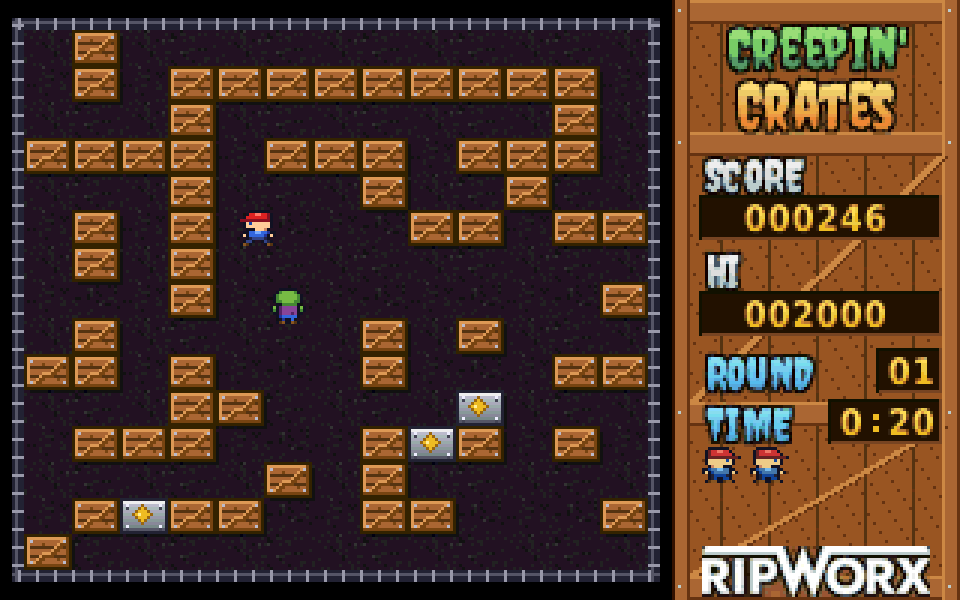
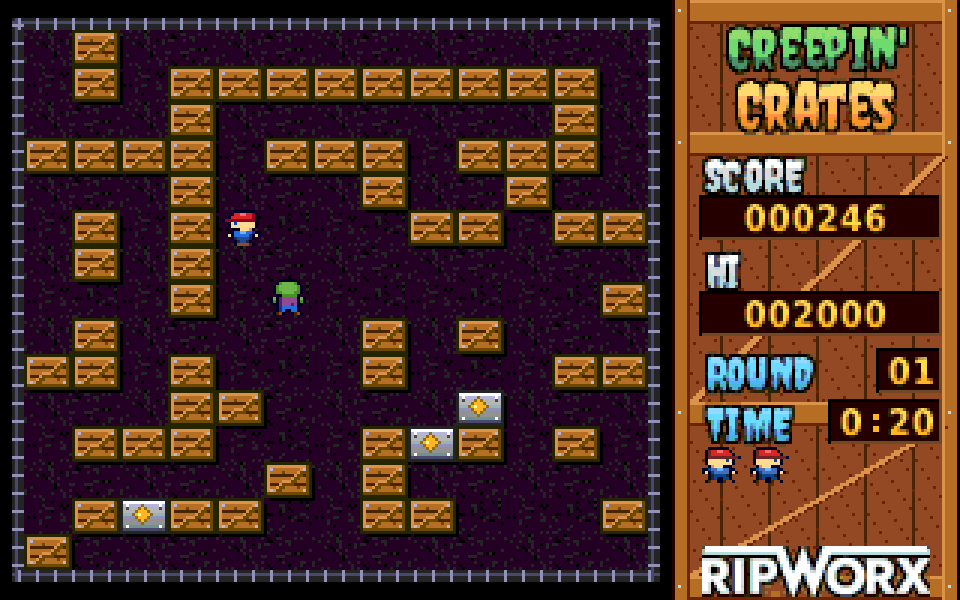

THE CRATE YARDEL DEPÓSITO DE CAJAS
Behind the old cemetery there is a crate yard, fenced in and forgotten. Every night, when the moon comes up, some of the crates flash green, crack open, and out climbs a zombie. Pushin' Pete can't fight them with his hands: all he has are the crates.
Detrás del viejo cementerio hay un depósito de cajas, cercado y olvidado. Cada noche, cuando sale la luna, algunas cajas brillan en verde, se rajan, y de adentro sale un zombi. Pushin' Pete no puede pelear con las manos: lo único que tiene son las cajas.
Push a crate and it slides until it hits something, squashing every zombie in its way. Smash the green crates before they hatch, shake the fence to stun the zombies touching it, and line up the three steel crates to call down the lightning. How many nights can you last?
Empuja una caja y se desliza hasta chocar con algo, aplastando a cada zombi que encuentre en el camino. Rompe las cajas verdes antes de que se abran, sacude la cerca para aturdir a los zombis que la tocan y pon en fila las tres cajas de acero para que caiga el rayo. ¿Cuántas noches vas a aguantar?
CHOOSE YOUR MACHINEELIGE TU MÁQUINA
COMMODORE 128

Version 1.0.0Versión 1.0.0
For the 80-column screen and the 64 KB VDC chip, on disk, with four intermission scenes.
Para la pantalla de 80 columnas y el chip VDC de 64 KB, en disco, con cuatro escenas intermedias.
MEGA65

Version 1.0.0Versión 1.0.0
In 256 colors, with characters that move pixel by pixel and stereo sound on four SID chips.
En 256 colores, con personajes que se mueven punto por punto y sonido en estéreo con cuatro chips SID.
ZX SPECTRUM NEXT

Version 1.0.0Versión 1.0.0
With hundreds of colors, hardware sprites and stereo sound on three AY chips, saved on the SD card.
Con cientos de colores, sprites por hardware y sonido en estéreo con tres chips AY, con el salón en la tarjeta.
Don't have the machine? The MEGA65 and ZX Spectrum Next versions also come for Windows and Linux, with the emulator included and all set up: download and play.
¿No tienes la máquina? Las versiones para MEGA65 y ZX Spectrum Next vienen también para Windows y Linux, con el emulador incluido y ya preparado: se descarga y se juega.
THE STORYLA HISTORIA
Creepin' Crates was born on the Commodore 128, as a challenge Carlos Zayas had been carrying since his teens: a game for the 80-column graphics of its VDC chip. He made it with the help of Claude, by Anthropic. Then it moved on to the MEGA65, the new 8-bit computer that carries on the Commodore 65, which gave it room for more: a rich palette, stereo sound and new scenes under the moon. And then to the ZX Spectrum Next, the heir to the Spectrum, with nothing left out.
Creepin' Crates nació en la Commodore 128, como un desafío que Carlos Zayas tenía pendiente desde su adolescencia: un juego para el modo gráfico de 80 columnas de su chip VDC. Lo hizo con la ayuda de Claude, de Anthropic. Después pasó a la MEGA65, la nueva computadora de 8 bits heredera de la Commodore 65, que le dio margen para más: una paleta rica en colores, sonido en estéreo y escenas nuevas bajo la luna. Y después a la ZX Spectrum Next, la heredera de la Spectrum, sin recortar nada.